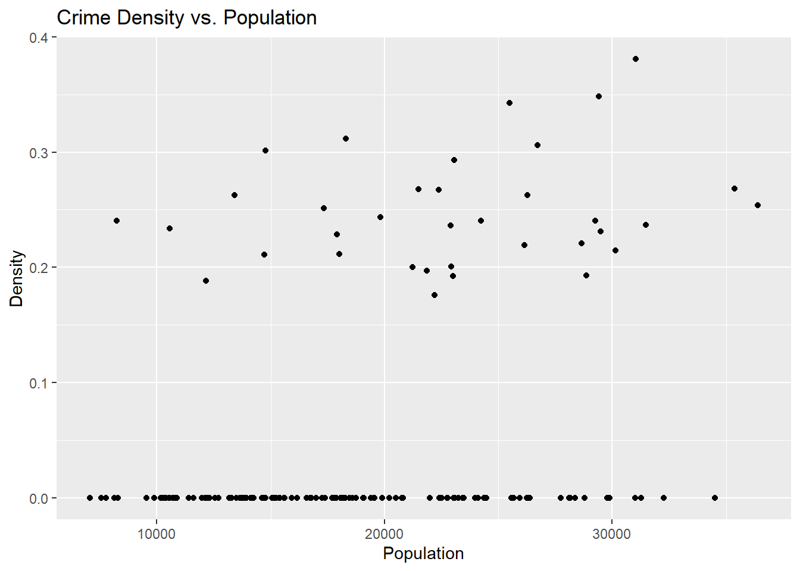
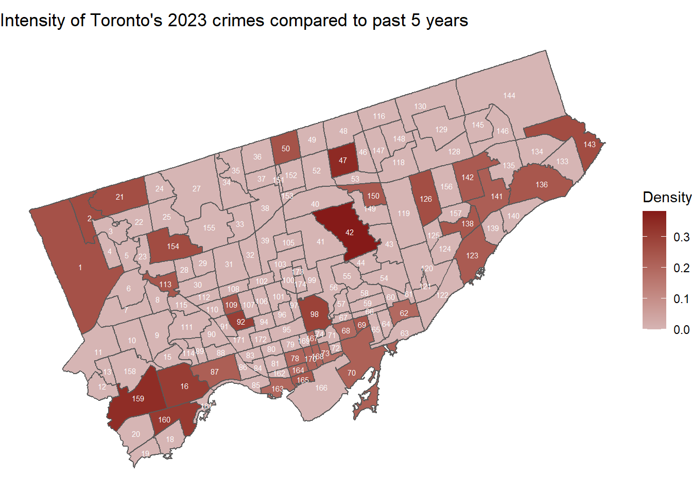
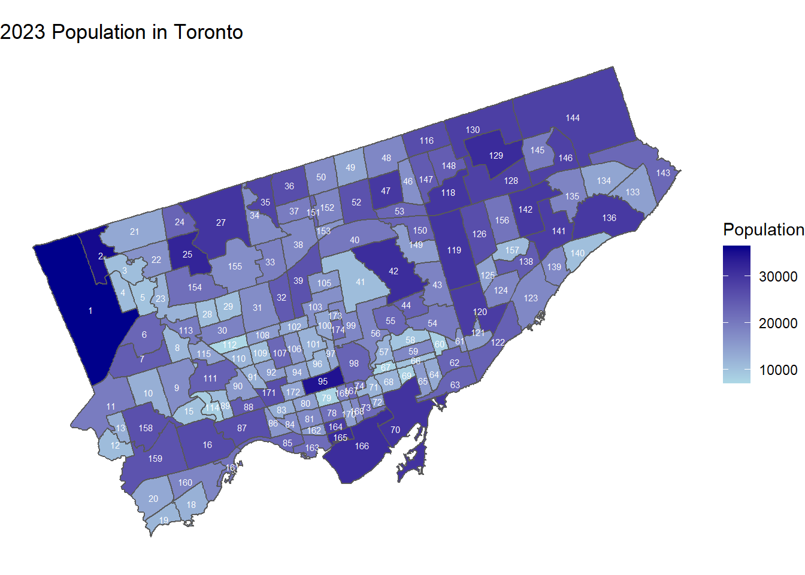
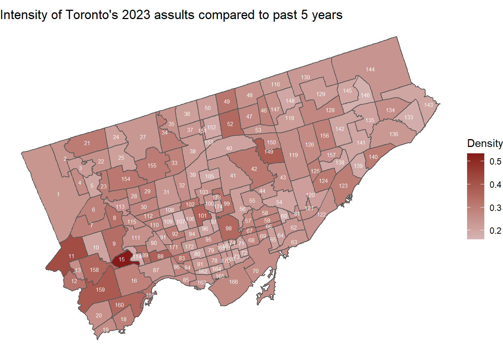
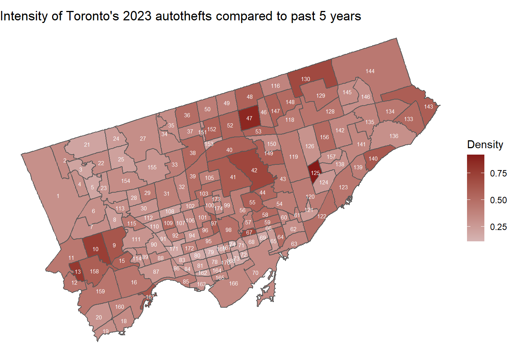
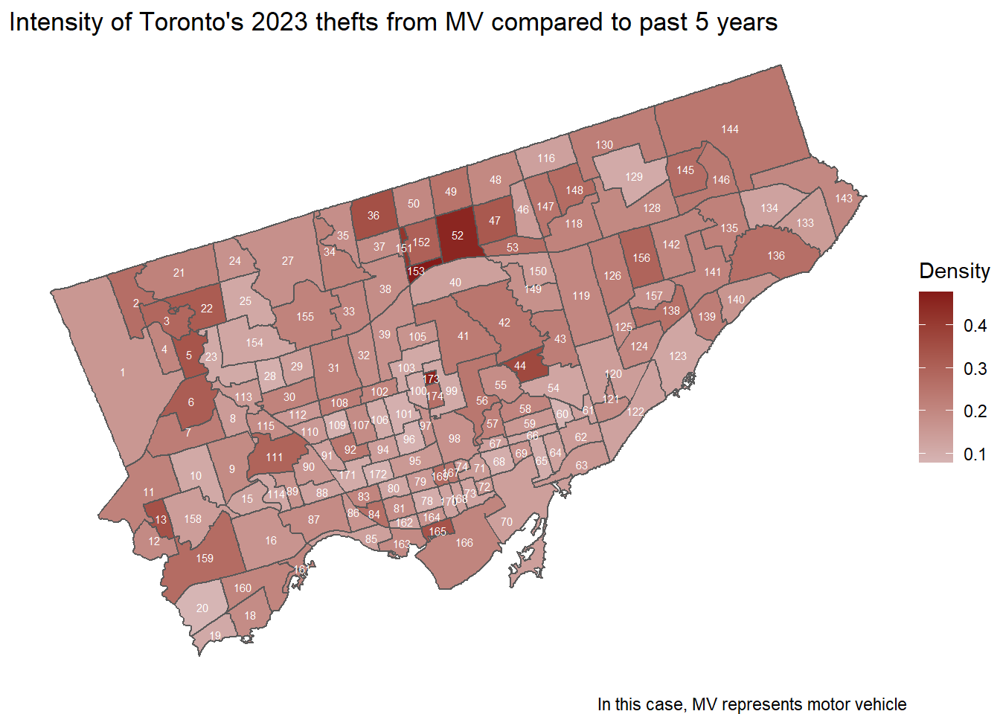
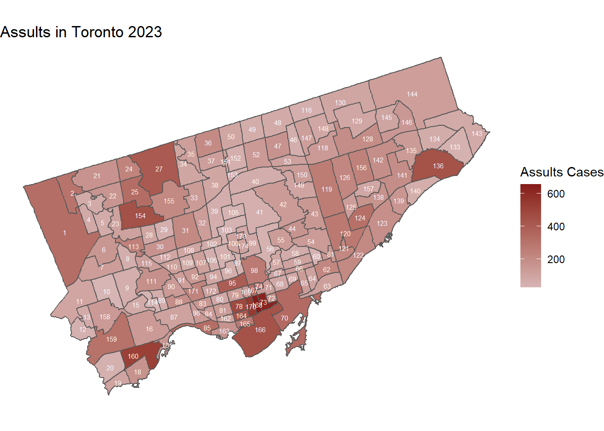
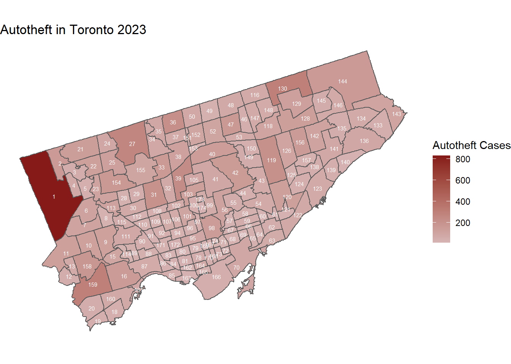
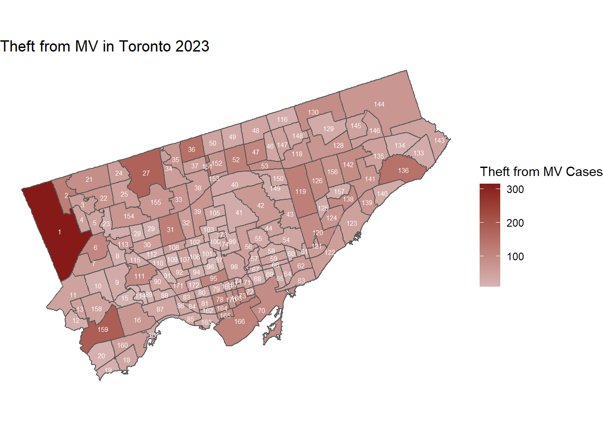
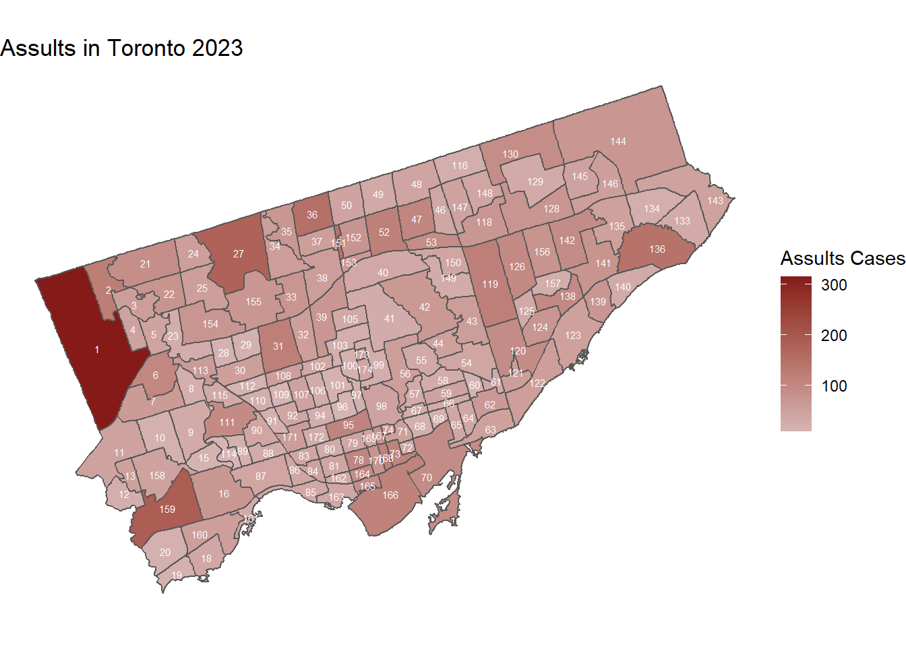

Rapid increase of crimes in Toronto since 2023: A result of post-covid era.
Abstract
Major cities in North America tend to have serious public safety issues compared to rural areas. Like most highly populated urban areas, Toronto has faced increasing crime rates in recent years. To further understand this issue, we will investigate the crime data provided by Toronto Police Services on Open Data Toronto. This dataset includes the count for Assault, Auto Theft, Break and Enter, Robbery, Theft Over, Homicide and Shooting & Firearm Discharges from 2014 to 2023. We gathered these data and computed the overall intensity of crimes in 2023 compared to the range between 2018 and 2022. Though crime density is significantly high in 2023, the comparison between the actual amount of crimes committed in 2023 and the pre-covid era suggests that crime rates in 2023 are returning to the pre-covid era.
Introduction
As the largest city in Canada, the city of Toronto has emerged as a unique and valuable study case for crime and assessment of effective intervention strategies. Toronto as one of the major cities in North America, has a considerable population density and complexity, these features allow Toronto to present a microscopic view of greater trends and studies. Moreover, the municipality of Toronto encourages transparency and provides online databases such as Open Data Toronto that are accessible to everyone. The database includes valuable and extensive crime statistics, which are fundamental for empirical scrutiny. Nonetheless, this enables a granular examination of criminal incidents across the city’s diverse neighborhoods.
On the Open Data Toronto platform, Toronto Police Services provided thorough crime data of Toronto from 2014 to 2023. These data include counts of Assault, Auto Theft, Break and Enter, Robbery, Theft Over, Homicide and Shooting & Firearm Discharges in Toronto over the years. Moreover, the Toronto Police Services also took accounts of the population estimates by Environics Analytics to compute the crime rate per 100,000 population. With this data set, the objective of this paper is to identify criminal trends and enhance the precision of crime prevention strategies.
Data
This paper is written using R and other libraries such as ‘tidyverse’, ‘dplyr’, and ‘here’ are used to manipuate data Müller (2020). We use “neighbourhood-crime-rates” as our primary dataset, which was retrived from the Open Data Toronto portal (Gelfand 2022). In this dataset, the crime counts and crime rate of all 158 city areas in Toronto from 2014-2023 is included. Moreover, each crime’s geometry on the Toronto map is recorded in the ‘geometry’ column. Another dataset we retrived from Open Data Toronto portal is “neighbourhood”. Which provides the complete geometry data needed to visualize all of Toronto’s city area. Since the datasets consists of detailed data, it would be inefficient to visaulize all data. Thus we will aim to analyze the crime data between 2019 and 2023 inclusively, and use libraries ‘sf’ and ‘ggplot2’ Wickham (2016) to visualize these data.
This scatter plot is visualized through calculating the density of 2023 crime data in the past 5 years. Though there isn’t a clear trend demonstrated on this graph, there are relevant information within the groupings of scattered points. It is worth noting that high crime density dots appears more often with large population, and the dots with zero density appears more often on the less side of the population spectrum than higher population.

To visualize this finding further, we visualize the previous relation in a geographical way organized by city areas and crime density. As demonstrated in this visualization, darker city areas such as 1 and 42 stands out with the rest of the dataset. This indicates an increase in intensity of crime compare to previous years.

To elaborate on this finding further, we visualized the 2023 Toronto population by city areas. As shown in the visualization above, high crime density city areas and high populaiton areas demonstrates a rather intuitive similarity. In this similarity, high population city areas tend to have high crime density in 2023. This implies, population is proportional to increase crime.



To investigate deeper into our findings, we will analyze the top 3 most committed crime in 2023. Through simple computing of the raw count of each crime in 2023, we were able to derive the top 3 committed crimes. In Figure 4.1, 4.2, and 4.3, the raw count of Assults, Autotheft, and Theft from Motor Vehicle are being displayed geographically.
From figures 4.1, 4.2, and 4.3, it is demonstrated that city areas with high count of crimes shows a direct correlation with city areas with high population (Figure 3). This similarity suggests that as we enter post-covid era, crimes have increase rapidly in highly populated areas.



To ensure the integrity of our analysis, we will cross reference the top 3 crime counts in 2023 with the pre-covid crime counts. Figures 5.1, 5.2, and 5.3 are geographical visualization of raw crime counts in 2019. By cross referencing Figures 5.1 to 5.3 with Figures 4.1 to 4.3, it is evidenct that the crime counts in 2023 is at the same level of 2019’s crime counts. This suggests that crime rate in Toronto are returning to pre-covid era.



To further ensure that the previous analysis is reasonable, we visualized the top 3 crime density in 2023 geographically. The high density in 2023’s crime data suggests a clear increase of crime from previous years. Which further completes our analysis as it suggests crime rate during covid era dropped.
Conclusion
From our analysis, the clear increase in crime density suggests that in more recent years than 2019, crime rates have dropped significantly due to some reason. Yet integrading recent social changes and world events, a reasonalble hypothesis would be the decrease in personnel turnover in 2023 compared to covid era. Thus, to provide an explanation for the sudden increase in crime density, it may be because 2023 had higher personnel turnover than 2022. As the majority of Canada are still under the shadow of covid 19 during 2022, many tourism and public services hadn’t recovered.However, further investigation of this suggestion need to be studied, as geographical related reasonings could also provide an explaination for the studied trend.
References
Gelfand, Sharla. 2022. Opendatatoronto: Access the City of Toronto Open Data Portal. https://sharlagelfand.github.io/opendatatoronto/.
Müller, Kirill. 2020. Here: A Simpler Way to Find Your Files. https://CRAN.R-project.org/package=here.
Pebesma, Edzer, and Roger Bivand. 2023. Spatial Data Science: With applications in R. Chapman and Hall/CRC. https://r-spatial.org/book/.
R Core Team. 2021. R: A Language and Environment for Statistical Computing. Vienna, Austria: R Foundation for Statistical Computing. https://www.R-project.org/.
Wickham, Hadley. 2016. Ggplot2: Elegant Graphics for Data Analysis. Springer-Verlag New York. https://ggplot2.tidyverse.org.
Wickham, Hadley, Mara Averick, Jennifer Bryan, Winston Chang, Lucy D’Agostino McGowan, Romain François, Garrett Grolemund, et al. 2019. “Welcome to the tidyverse.” Journal of Open Source Software 4 (43): 1686. https://doi.org/10.21105/joss.01686.
Wickham, Hadley, Romain François, Lionel Henry, Kirill Müller, and Davis Vaughan. 2023. Dplyr: A Grammar of Data Manipulation. https://dplyr.tidyverse.org.